Trusted by Global & National Institutions
Collaborating for systemic change
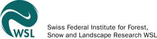
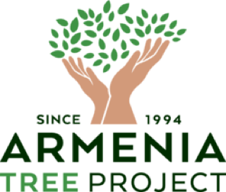
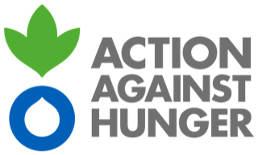
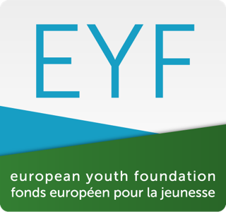
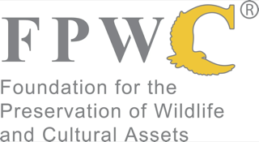
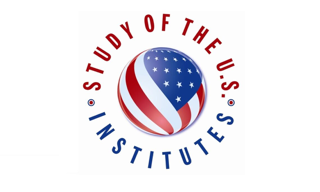
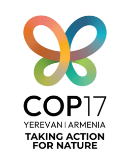
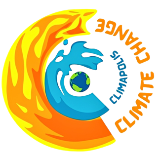
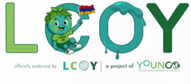
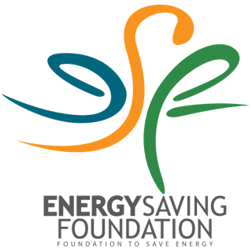
Impact in numbers
- 0k+ Youth mobilized for sustainability
- 0+ Training sessions conducted
- 0+ Webinars & seminars hosted
- 0+ Environmental projects led nationwide
- 0+ Communities impacted nationwide
Panic is a luxury we cannot afford. And despair is a scientifically inaccurate conclusion … We may have broken the thermostat, but we still have to fly the ship.
Welcome to my journey
From an eco-club in Ararat
to the global stage
My commitment to climate resilience began at age eleven in a local eco-club, driven by a tangible threat: the advancing desertification of my home region, Ararat. That early confrontation with ecological vulnerability dictated my professional trajectory. Today, as an interdisciplinary climate & environmental researcher, I merge computational science with ecosystem analysis. From building predictive machine learning frameworks for forest dieback in collaboration with the Swiss Federal Institute for Forest, Snow and Landscape Research (WSL) to conducting environmental assessments at the AUA Acopian Center, my work is anchored in rigorous, data-driven science. Over the past ten years, I have systematically worked to bridge the gap between science, policy, and activism.
Because raw data requires decisive governance, my objective is to elevate localized adaptation frameworks and youth leadership onto the global diplomatic stage. Whether serving as the UN Youth & Children High-Level Climate Champion, spearheading Armenia's largest Local Conferences of Youth (LCOY), or advising on environmental policy for UNICEF and national ministries, I advocate for systemic, science-backed resilience.
To ensure these initiatives succeed in the long term, we must also democratize climate intelligence. Through directing academy programs, developing serious game simulations, and architecting bilingual citizen science toolkits, I translate complex planetary boundaries into accessible training modules for the next generation of eco-citizens. Ultimately, I am building the architecture for climate adaptation — from the codebase to the conference table.
Read my storyResearch & portfolio
Four fronts, one system
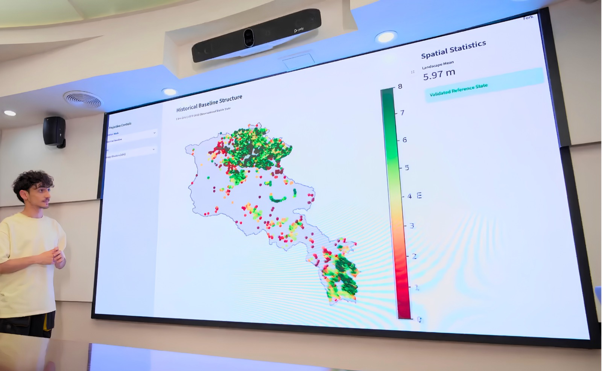
Research & Modeling
Advancing predictive ecosystem resilience. Utilizing machine learning pipelines, geospatial analysis, and multi-temporal climate arrays to forecast structural vulnerabilities alongside institutions like the Swiss Federal Institute for Forest, Snow and Landscape Research (WSL) and the AUA Acopian Center for the Environment. Explore Scientific Research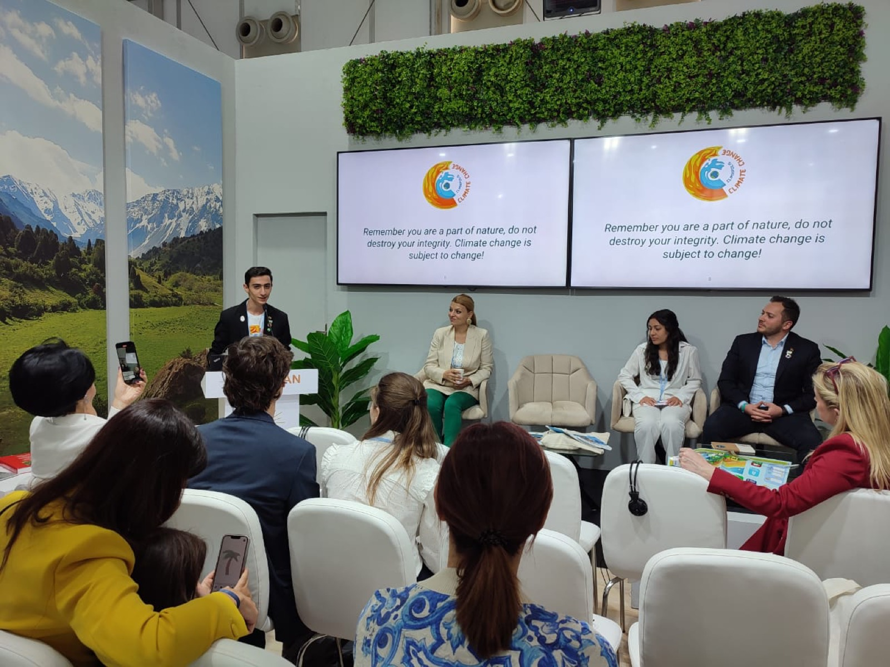
Climate Policy & Diplomacy
Shaping national strategies and international frameworks. Bridging civil society and governmental policy by elevating evidence-based climate demands and youth representation at UNFCCC, CBD, European Parliament, and other global summits. Review Policy Work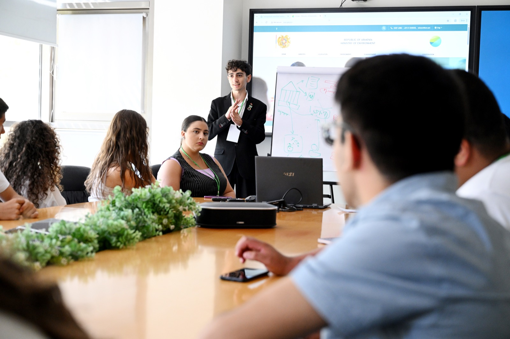
Capacity Building & Citizen Science
Democratizing environmental intelligence. Architecting bilingual pedagogical frameworks, serious game simulations, and actionable monitoring toolkits to train and equip the next generation of climate leaders. Actively delivering targeted capacity-building trainings and expert workshops. Discover Educational ToolsProject Leadership & Adaptation
Directing the full lifecycle of environmental interventions. Transforming scientific data and strategic advocacy into tangible, on-the-ground community resilience and ecosystem adaptation initiatives. View Project Portfolio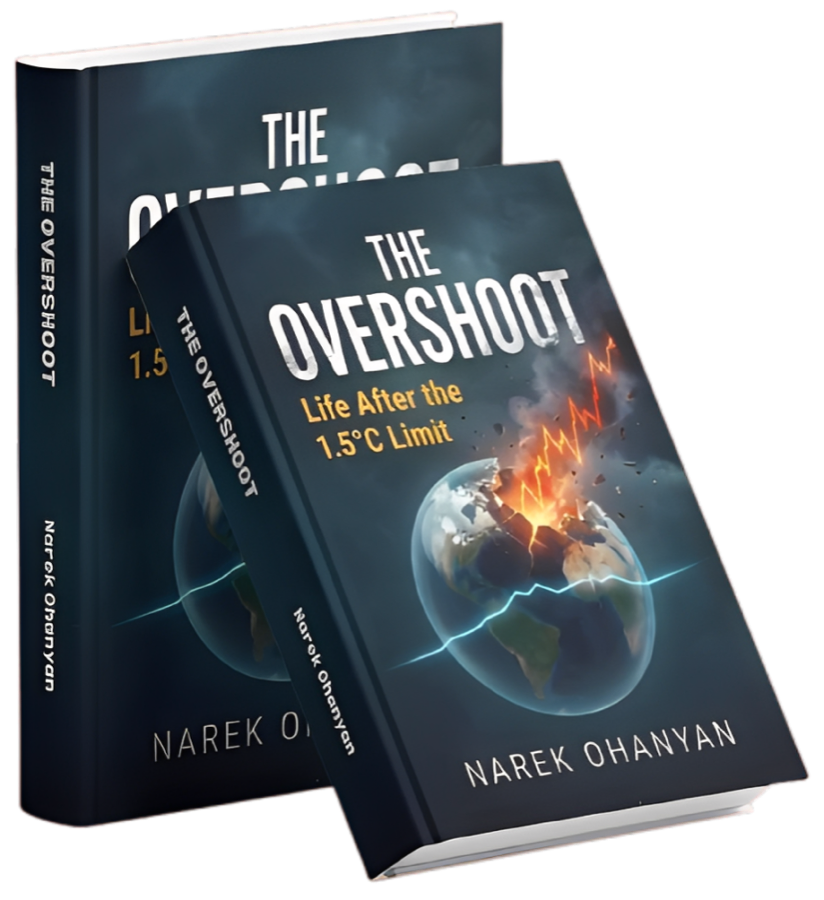
The book
The Overshoot
Life After the 1.5°C Limit
— By Narek Ohanyan —
From grassroots mobilization to the cutting edge of scientific research, The Overshoot explores the necessary journey of transforming passion into tangible environmental impact. Ditching the “old rules” that have failed us, this book dives into the logic-driven strategies and resilience modeling required to navigate life after the 1.5°C limit.
Order your copyGet in touch
Let’s turn evidence
into action
Whether you are exploring academic research partnerships, seeking expert consultation on environmental science, or organizing a climate / environmental summit, I am open to high-impact collaborations. Let us work together to advance data-driven climate resilience and elevate evidence-based adaptation strategies.
Get in touch